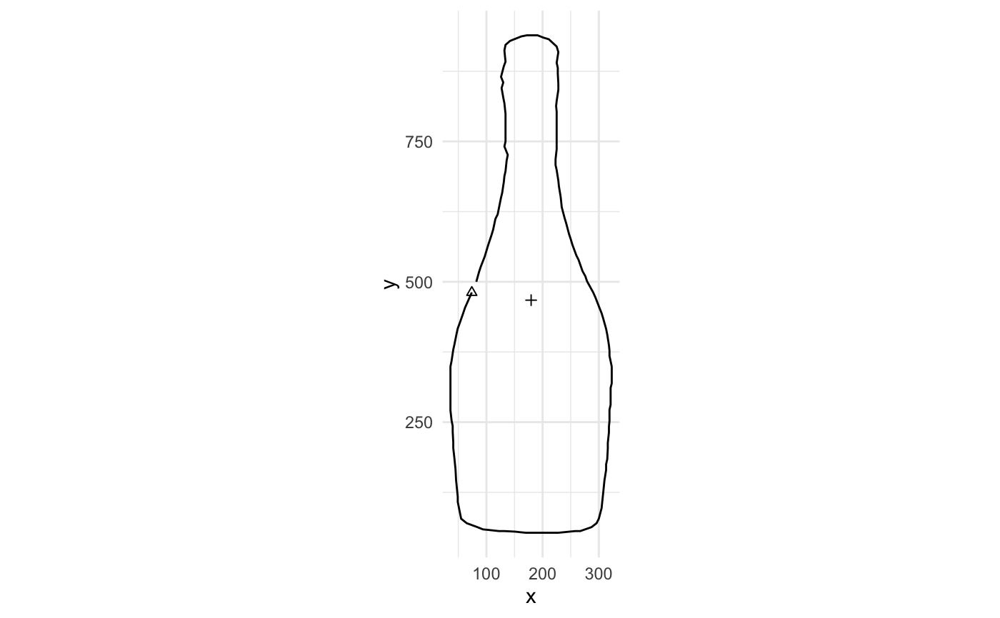
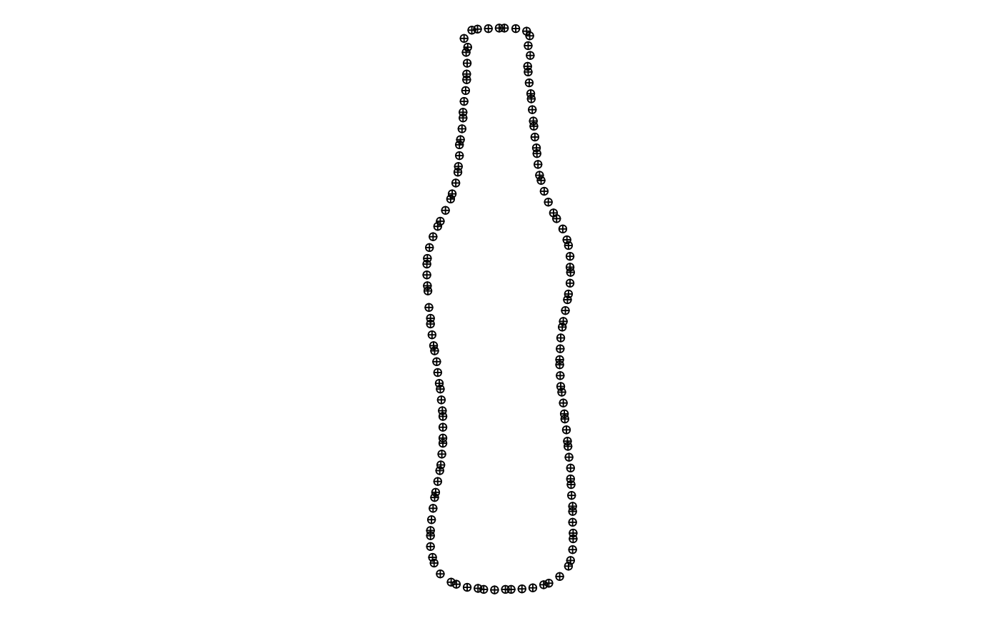

gg.RdDefault (ggplot2) visualisations for Momocs objects.
gg0(x, ...) # S3 method for default gg0(x, ...) # S3 method for coo_single gg0(x, ...) # S3 method for mom_tbl gg0(x, ...) # S3 method for tbl gg0(x, ...) gg(x, first = TRUE, centroid = TRUE, axes = TRUE, ...) # S3 method for pca gg0(x, x_axis, y_axis, ...)
| x | a Momocs object |
|---|---|
| ... | additional parameters to feed geoms |
| first |
|
| centroid |
|
| axes |
|
| x_axis | column name |
| y_axis | column name |
| gg |
|
a ggplot object
gg is the base plotter.
gg0 prepare the canvas but let you pick your ggplot2::geoms.
draw add shapes on top of last plot
I call it "universal" as a reminder to provide a gg for each object.
b <- bot %>% pick(5) gg(b)
# Let's add some geoms to nice_plot <- gg0(b) + ggplot2::geom_polygon(color="grey50", fill="red", alpha=0.25) + ggplot2::geom_point(shape="circle plus") nice_plot # print it
# you have all ggplot2 for free 8-) # you do not have to ggplot2:: if you library(ggplot2) before gorgeous_plot <- nice_plot + ggplot2::theme_minimal() + ggplot2::labs(x="abscissa", y="ordinate", title="Drink responsibly") # this is a plotting factory ! # gorgeous_plot %+% pick(bot, 12)